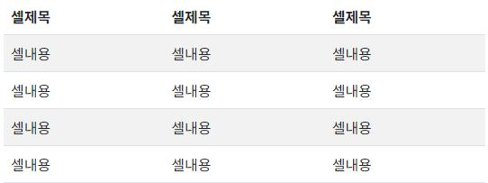

부트스트랩에서 테이블 태그에는 약간의 셀안쪽 여백 기본적용
| 셀제목 | 셀제목 | 셀제목 |
|---|---|---|
| 셀내용 | 셀내용 | 셀내용 |
| 셀내용 | 셀내용 | 셀내용 |
| 셀내용 | 셀내용 | 셀내용 |
| 셀내용 | 셀내용 | 셀내용 |
| 번호 | 제목 | 작성자 | 작성일 | 조회 |
|---|---|---|---|---|
| 4 | 4번째글 | 관리자 | 2024-02-20 16:21 | 4 |
| 3 | 3번째글 | 관리자 | 2024-02-20 16:21 | 3 |
| 2 | 2번째글 | 관리자 | 2024-02-20 16:21 | 2 |
| 1 | 1번째글 | 관리자 | 2024-02-20 16:21 | 1 |
| class="table-striped" : 행마다 다른 색상을 적용 | class = "table-bordered" : 테이블 셀 테두리 만들기 | |
|---|---|---|
|  | ||
| class="table-dark" : 테이블 제목줄(thead)에 배경색 어둡게 적용 | class="table-hover" : 마우스 오버시 배경색 변경 | class="table-success/danger,info,primary" : tr,td에 각 분류색상 적용 가능 |
| class="table-responsive" : 화면의 너비가 768px미만일 경우 가로로 스크롤됨 |
nav, ul, li, a태그로 작성하고 nav태그에 aria-label 속성을 작성한다(페이지내 내비게이션이 여러개 있을 수 있기 때문에 목적을 반영하기 위함)
li태그에 class="page-item"을 적용하고 활성화된 메뉴는 'active', 비활성화된 메뉴는 'disabled' 적용
a태그에 class="page-link"를 적용
정렬속성은 ul태그에 class="justify-content-center"적용